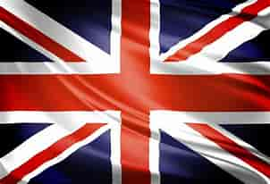
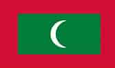
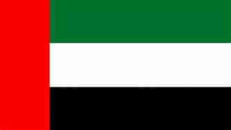
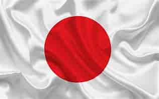
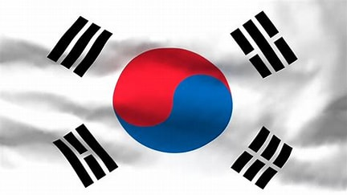
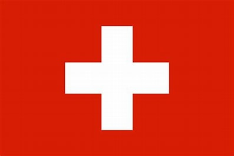
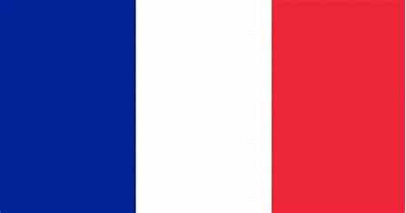
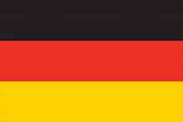

INDIA
- Capital
- DELHI
-
Delhi,[a] officially the National Capital Territory (NCT) of Delhi, is a
city and a union territory of India containing New Delhi, the capital of
India. Straddling the Yamuna river, primarily its western or right bank,
Delhi shares borders with the state of Uttar Pradesh in the east and
with the state of Haryana in the remaining directions. The NCT covers an
area of 1,484 square kilometres (573 sq mi).[5] According to the 2011
census, Delhi's city proper population was over 11 million,[14][15]
while the NCT's population was about 16.8 million.[16] Delhi's urban
agglomeration, which includes the satellite cities Ghaziabad, Faridabad,
Gurgaon and Noida in an area known as the National Capital Region (NCR),
has an estimated population of over 28 million, making it the largest
metropolitan area in India and the second-largest in the world (after
Tokyo).[17] The topography of the medieval fort Purana Qila on the banks
of the river Yamuna matches the literary description of the citadel
Indraprastha in the Sanskrit epic Mahabharata; however, excavations in
the area have revealed no signs of an ancient built environment. From
the early 13th century until the mid-19th century, Delhi was the capital
of two major empires, the Delhi sultanate and the Mughal Empire, which
covered large parts of South Asia. All three UNESCO World Heritage Sites
in the city, the Qutub Minar, Humayun's Tomb, and the Red Fort, belong
to this period. Delhi was the early centre of Sufism and Qawwali music.
The names of Nizamuddin Auliya and Amir Khusrau are prominently
associated with it. The Khariboli dialect of Delhi was part of a
linguistic development that gave rise to the literature of the Urdu
language and then of Modern Standard Hindi.
-

Indian Flag
-
The national flag of India, colloquially called the tricolour, is a
horizontal rectangular tricolour flag, the colours being of India
saffron, white and India green; with the Ashoka Chakra, a 24-spoke
wheel, in navy blue at its centre.[1][2] It was adopted in its present
form during a meeting of the Constituent Assembly held on 22 July 1947,
and it became the official flag of the Dominion of India on 15 August
1947. The flag was subsequently retained as that of the Republic of
India. In India, the term "tricolour" almost always refers to the Indian
national flag. The flag is based on the Swaraj flag, a flag of the
Indian National Congress designed by Pingali Venkayya.
USA
- Capital
- Wachington D.C
-
Washington, D.C., formally the District of Columbia and commonly known
as Washington or D.C., is the capital city and federal district of the
United States.[10] The city is located on the east bank of the Potomac
River, which forms its southwestern border with Virginia, and borders
Maryland to its north and east. The city was named for George
Washington, a Founding Father, commanding general of the Continental
Army in the American Revolutionary War, and the first president of the
United States,[11] and the district is named for Columbia, the female
personification of the nation.
-

USA Flag
-
The national flag of the United States of America (often referred to as
the American flag, or the U.S. flag) consists of thirteen equal
horizontal stripes of red (top and bottom) alternating with white, with
a blue rectangle in the canton (referred to specifically as the "union")
bearing fifty small, white, five-pointed stars arranged in nine offset
horizontal rows, where rows of six stars (top and bottom) alternate with
rows of five stars. The 50 stars on the flag represent the 50 U.S.
states, and the 13 stripes represent the thirteen British colonies that
declared independence from Great Britain, and became the first states in
the U.S.[1] Nicknames for the flag include the Stars and Stripes,[2][3]
Old Glory,[4] and the Star-Spangled Banner.
SPAIN
- Capital
- Madrid
-
Spain (Spanish: España, ), or the Kingdom of Spain (Reino de España), is
a country primarily ... Spain's capital and largest city is Madrid;
other major urban areas include Barcelona, Valencia, Seville, Zaragoza,
Málaga, Murcia, Palma de Mallorca, Las Palmas de Gran Canaria, and
Bilbao. Anatomically modern
-

Spain Flag
-
The national flag of Spain (Spanish: Bandera de España), as it is
defined in the Constitution of 1978, consists of three horizontal
stripes: red, yellow and red, the yellow stripe being twice the size of
each red stripe. Traditionally, the middle stripe was defined by the
more archaic term of gualda
United Kingdom
- Capital
- London
-
ondon is the capital and largest city of England and the United Kingdom.
The city stands on the River Thames in the south-east of England, at the
head of its 50-mile (80 km) estuary leading to the North Sea. London has
been a major settlement for two millennia, and was originally called
Londinium, which was founded by the Romans.
-

UK Flag
The flag's height-to-length proportions at sea are 1:2. The earlier flag
of Great Britain was established in 1606 by a proclamation of King James
VI and I of Scotland and England. The new flag of the United Kingdom was
officially created by an Order in Council of 1801
MALDIVES
- Capital
- Male
-
Malé is the capital and most populous city of the Maldives. With a
population of 252,768 and an area of 8.30 square kilometres (3.20 sq
mi), it is also one of the most densely populated cities in the world.
The city is geographically located in the southern edge of North Malé
Atoll (Kaafu Atoll) Administratively,
-

Maldives Flag
-
The flag of the State of Maldives is green with a red edge. Maldives
Flag centre stands a vertical white crescent; the closed side of the
semicircular is on the hoist side of the flag. It was accepted on 25
July 1965.
UAE
- Capital
- Dubai
-
Dubai (/duːˈbaɪ/, doo-BY; Arabic: دبي, romanized: Dubayy, IPA:
[dʊˈbajj], Gulf Arabic pronunciation: [dəˈbaj]) is the most populous
city in the United Arab Emirates (UAE) and the capital of the Emirate of
Dubai, the most populated of the 7 emirates of the United Arab
Emirates.[7][8][9] Established in the 18th century as a small fishing
village, the city grew rapidly in the early 21st century with a focus on
tourism and luxury,[10] having the second most five-star hotels in the
world,[11] and the tallest building in the world, the Burj Khalifa,
which is 828 metres (2,717 ft) tall.[12]
-

Dubai Flag
-
Soon after the flags of the other emirates were lowered and the UAE flag
was raised. Abu Dhabi. Flag of Abu Dhabi. The flag of Abu Dhabi is a red
flag with a white rectangle at the top-left corner. According to the
1820 General Maritime Treaty with the British, in times of war a full
red flag would be used by the
JAPAN
- Capital
- Tokyo
-
While no laws have designated Tokyo as the Japanese capital, many laws
have defined a "capital area" (首都圏, shuto-ken) that incorporates
Tokyo. Article 2 of the Capital Area Consolidation Law (首都圏整備法) of
1956 states: "In this Act, the term 'capital area' shall denote a broad
region comprising both
-

Japan Flag
-
The national flag of Japan is a rectangular white banner bearing a
crimson-red circle at its center. This flag is officially called the
Nisshōki (日章旗, 'flag of the sun'), but is more commonly known in
Japan as the Hinomaru (日の丸, 'Ball of the sun'). It embodies the
country's sobriquet: the Land of the Rising Sun
Korea
- Capital
- Seoul
-
Korea has had a number of capitals. Korea is a peninsula in East Asia,
currently the peninsula is divided into two countries: North Korea's
capital is Pyongyang, and South Korea's capital is Seoul.
-

Korea Flag
-
The national flag of South Korea, also known as the Taegeukgi (also
spelled as Taegukgi, lit. 'Taiji flag') and colloquially known as the
flag of Korea, has three parts: a white rectangular background, a red
and blue Taegeuk in its center, accompanied by four black trigrams, one
in each corner.
Swizerland
- Capital
- Bern
-
Switzerland, officially the Swiss Confederation, is a landlocked country
located at the confluence of Western, Central and Southern Europe. It is
bordered by Italy to the south, France to the west, Germany to the north
and Austria and Liechtenstein to the east. Switzerland is geographically
divided among the Swiss
-

Swizerland Flag
-
The national flag of Switzerland (German: Schweizerfahne; French:
drapeau de la Suisse; Italian: bandiera svizzera; Romansh: bandiera da
la Svizra) displays a white cross in the centre of a square red field.
The white cross is known as the Swiss cross or the federal cross. Its
arms are equilateral, and their ratio
France
- Capital
- Paris
-
Paris is the capital city of France. The city has an approximate area of
41 square miles with a population of 2,206,488 people as of 2018.
Contrary to popular belief, the name of the city did not come from the
Paris in Greek myths.
-

France Flag
-
The national flag of France (French: drapeau français) is a tricolour
featuring three vertical bands coloured blue (hoist side), white, and
red. It is known to English speakers as the Tricolour (French:
Tricolore), although the flag of Ireland and others are also so known.
The design was adopted after the French
GERMANY
- Capital
- Berlin
-
The capital of Germany is the city state of Berlin. It is the seat of
the President of Germany, whose official residence is Schloss Bellevue.
The Bundesrat ("federal council") is the representation of the Federal
States (Bundesländer) of Germany and has its seat at the former Prussian
Herrenhaus (House of Lords).
-

Germany Flag
-
The national flag of Germany is a tricolour consisting of three equal
horizontal bands displaying the national colours of Germany: black, red,
and gold (German: Schwarz-Rot-Gold [de]). The flag was first sighted in
1848 in the German Confederation. It was officially adopted as the
national flag.